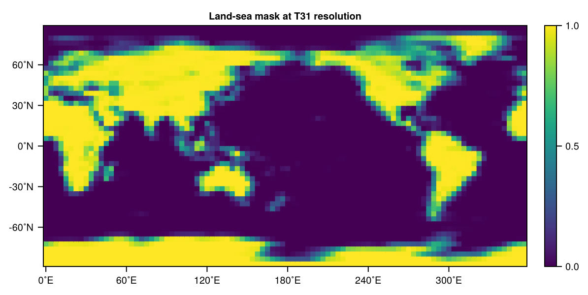
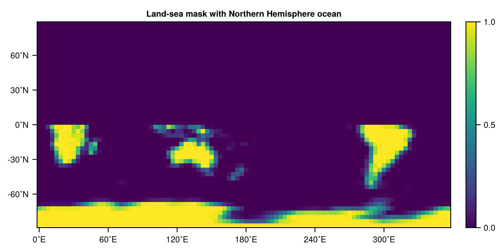
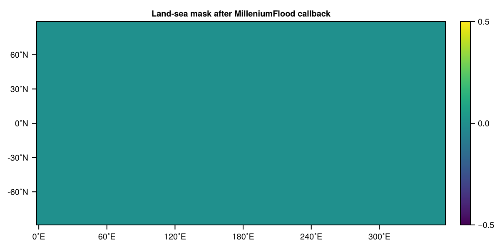

The land-sea mask
The following describes how a custom land-sea mask can be defined. SpeedyWeather uses a fractional land-sea mask, i.e. for every grid-point
- 1 indicates land
- 0 indicates ocean
- a value in between indicates a grid-cell partially covered by ocean and land
Setting the land-sea mask to ocean therefore will disable any fluxes that may come from land, and vice versa. However, with an ocean-everywhere land-sea mask you must also define sea surface temperatures everywhere, otherwise the fluxes in those regions will be zero.
For more details, see Surface fluxes and the Land-sea mask section therein. Predefined land-sea masks are
using SpeedyWeather
subtypes(SpeedyWeather.AbstractLandSeaMask)3-element Vector{Any}:
AquaPlanetMask
EarthLandSeaMask
RockyPlanetMaskwith EarthLandSeaMask being the default LandSeaMask using the land-sea mask of Earth. LandSeaMask simply points to this.
Manual land-sea mask
You can create the default land-sea mask as follows
using SpeedyWeather
spectral_grid = SpectralGrid(trunc=31, nlayers=8)
land_sea_mask = LandSeaMask(spectral_grid)EarthLandSeaMask{Float32, OctahedralGaussianField{Float32, 1}} <: AbstractLandSeaMask
├ path::String = SpeedyWeather.jl/input_data
├ file::String = land-sea_mask.nc
├ file_Grid::UnionAll = FullClenshawGrid
└── arrays: maskwhich will automatically interpolate the land-sea mask onto grid and resolution as defined in spectral_grid at initialization. The actual mask is in land_sea_mask.mask and you can visualise it with
model = PrimitiveWetModel(spectral_grid; land_sea_mask)
simulation = initialize!(model) # triggers also initialization of model.land_sea_mask
using CairoMakie
heatmap(land_sea_mask.mask, title="Land-sea mask at T31 resolution")
Now after initialization (otherwise you reinitialize the mask, overwriting your changes) you could manually change the land-sea mask with the set! function which can take scalars as global constants or functions of two arguments longitude $\lambda$ and $\varphi$. You can use an anonymous function (λ, φ) -> ... but you do not have to, defining function f(λ, φ) and then using land_sea_mask = f works too.
set!(model, land_sea_mask=0) # aqua planet
set!(model, land_sea_mask=1) # rocky planet
set!(model, land_sea_mask=(λ, φ) -> rand()-1) # random small islands
# snowball planet with ocean in the tropics between 10˚S and 10˚N
set!(model, land_sea_mask=(λ, φ) -> abs(φ) < 10 ? 0 : 1)
# flood the northern hemisphere only, values are automatically clamped into [0, 1]
initialize!(model.land_sea_mask, model) # back to Earth's mask
set!(model, land_sea_mask=(λ, φ) -> φ > 0 ? -1 : 0, add=true)
# visualise
heatmap(land_sea_mask.mask, title="Land-sea mask with Northern Hemisphere ocean")┌ Warning: Land-sea mask not in [0, 1] but in [-0.9998533, -1.26454925e-5]. Clamping.
└ @ SpeedyWeather ~/work/SpeedyWeather.jl/SpeedyWeather.jl/src/physics/land_sea_mask.jl:101
┌ Warning: Land-sea mask not in [0, 1] but in [-1.0, 1.0]. Clamping.
└ @ SpeedyWeather ~/work/SpeedyWeather.jl/SpeedyWeather.jl/src/physics/land_sea_mask.jl:101
And now you can run the simulation as usual with run!(simulation).
Earth's land-sea mask
The EarthLandSeaMask has itself the option to load another land-sea mask from file, but you also have to specify the grid that mask from files comes on. It will then attempt to read it via NCDatasets and interpolate onto the model grid.
AquaPlanetMask
Predefined is also the AquaPlanetMask which can be created as
land_sea_mask = AquaPlanetMask(spectral_grid)AquaPlanetMask{Float32, OctahedralGaussianField{Float32, 1}} <: AbstractLandSeaMask
└── arrays: maskand is equivalent to using EarthLandSeaMask but setting the entire mask to zero afterwards land_sea_mask.mask .= 0.
Custom land-sea mask
Every (custom) land-sea mask has to be a subtype of AbstractLandSeaMask. A custom land-sea mask has to be defined as a new type (struct or mutable struct)
CustomMask{NF, GridVariable2D} <: AbstractLandSeaMaskand needs to have at least a field called mask::GridVariable2D that uses a GridVariable2D as defined by the SpectralGrid object, so of correct size and with the number format NF. All AbstractLandSeaMask have a convenient generator function to be used like mask = CustomMask(spectral_grid, option=argument), but you may add your own or customize by defining CustomMask(args...) which should return an uninitialised instance of that new type. Uninitialised meaning that for example all elements of the mask are zero. Then the initialize function has to be extended for that new mask
initialize!(mask::CustomMask, model::PrimitiveEquation)which generally is used to tweak the mask.mask grid as you like, using any other options you have included in CustomMask as fields or anything else. model should be preferably read-only, because this is only to initialize the land-sea mask, nothing else from model. You can for example read something from file, set some values manually, or use coordinates from model.geometry.
Time-dependent land-sea mask
It is possible to define an intrusive callback to change the land-sea mask during integration. The grid in model.land_sea_mask.mask is mutable, meaning you can change the values of grid points in-place but not replace the entire mask or change its size. If that mask is changed, this will be reflected in all relevant model components. For example, we can define a callback that floods the entire planet at the beginning of the 21st century as
@kwdef struct MilleniumFlood <: SpeedyWeather.AbstractCallback
schedule::Schedule = Schedule(DateTime(2000,1,1))
end
# initialize the schedule
function SpeedyWeather.initialize!(
callback::MilleniumFlood,
progn::PrognosticVariables,
diagn::DiagnosticVariables,
model::AbstractModel,
)
initialize!(callback.schedule, progn.clock)
end
function SpeedyWeather.callback!(
callback::MilleniumFlood,
progn::PrognosticVariables,
diagn::DiagnosticVariables,
model::AbstractModel,
)
# escape immediately if not scheduled yet
isscheduled(callback.schedule, progn.clock) || return nothing
# otherwise set the entire land-sea mask to ocean
model.land_sea_mask.mask .= 0
@info "Everything flooded on $(progn.clock.time)"
end
# nothing needs to be done after simulation is finished
SpeedyWeather.finalize!(::MilleniumFlood, args...) = nothingNote that the flooding will take place only at the start of the 21st century, last indefinitely, but not if the model integration period does not cover that exact event, see Schedules. Initializing a model a few days earlier would then have this MilleniumFlood take place
land_sea_mask = LandSeaMask(spectral_grid) # start with Earth's land-sea mask
model = PrimitiveWetModel(spectral_grid; land_sea_mask)
add!(model, MilleniumFlood()) # or MilleniumFlood(::DateTime) for any non-default date
simulation = initialize!(model, time=DateTime(1999,12,29))
run!(simulation, period=Day(5))
heatmap(model.land_sea_mask.mask, title="Land-sea mask after MilleniumFlood callback")[ Info: Everything flooded on 2000-01-01T00:00:00
And the land-sea mask has successfully been set to ocean everywhere at the start of the 21st century. Note that while we added an @info line into the callback! function, this is here not printed because of how the Documenter works. If you execute this in the REPL you'll see it.